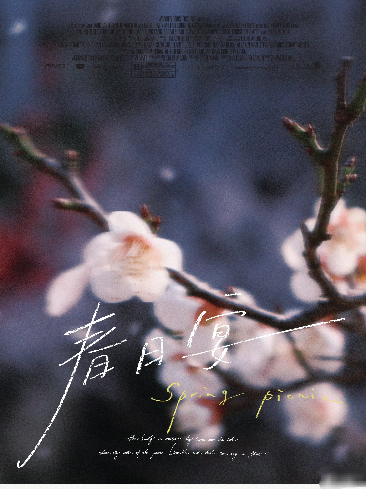
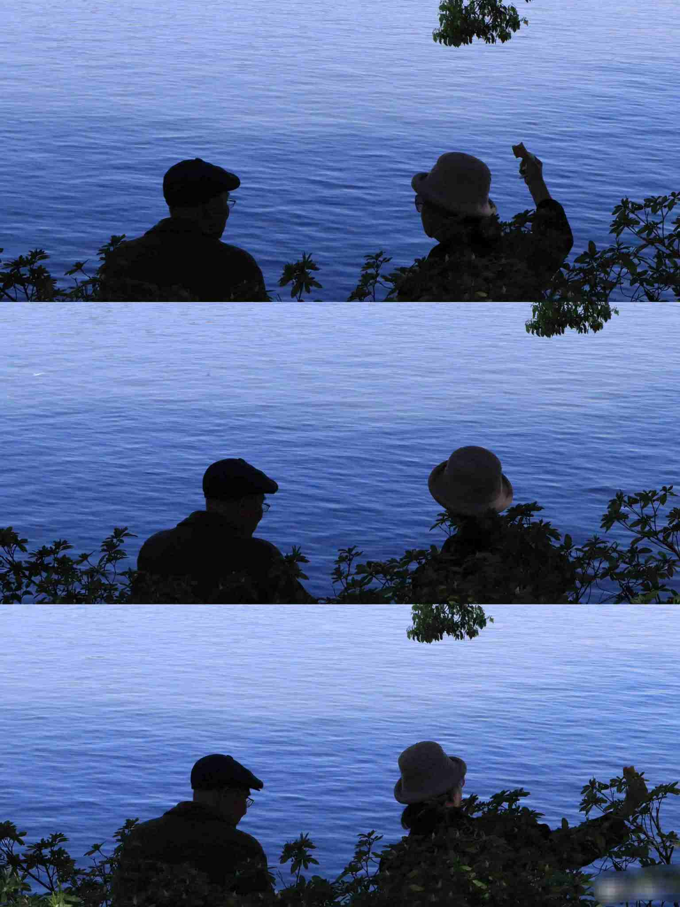
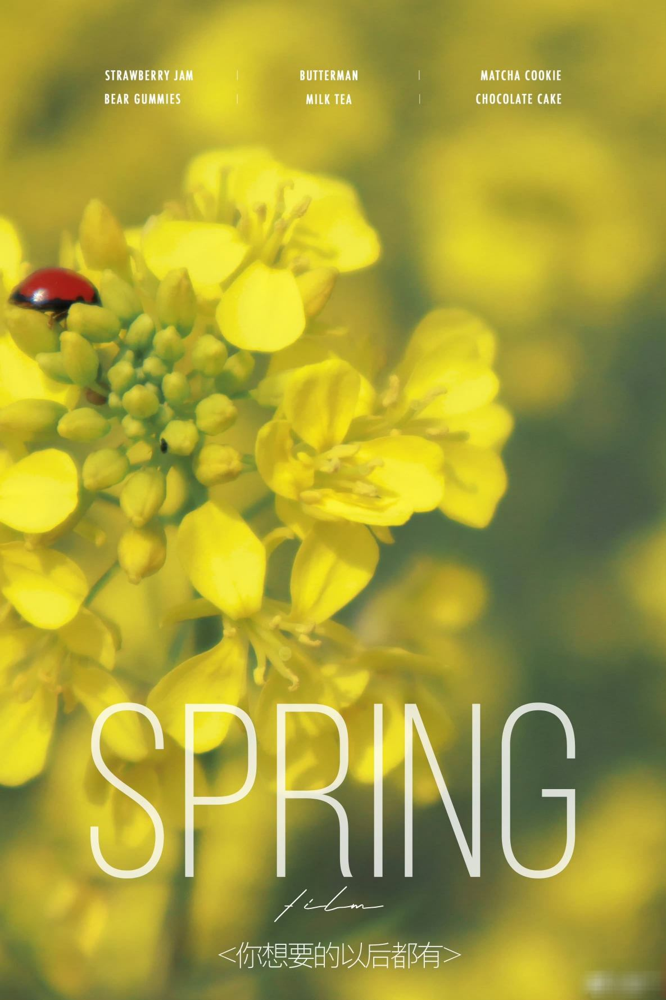
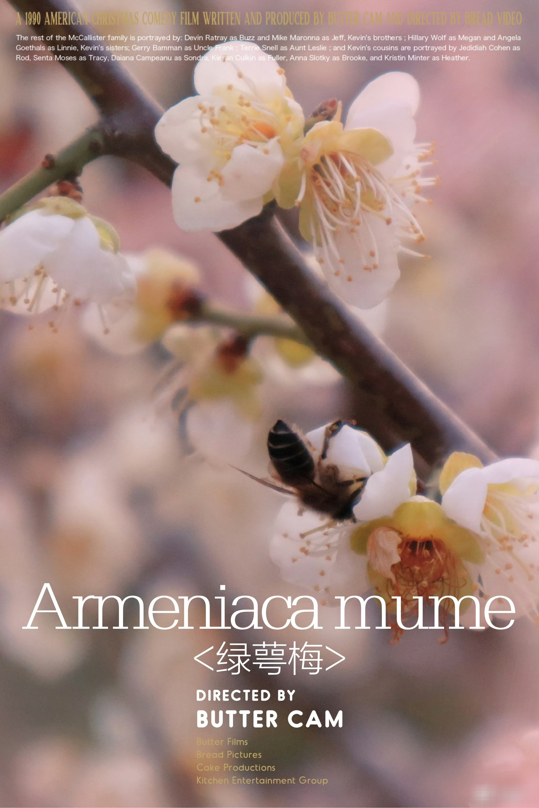
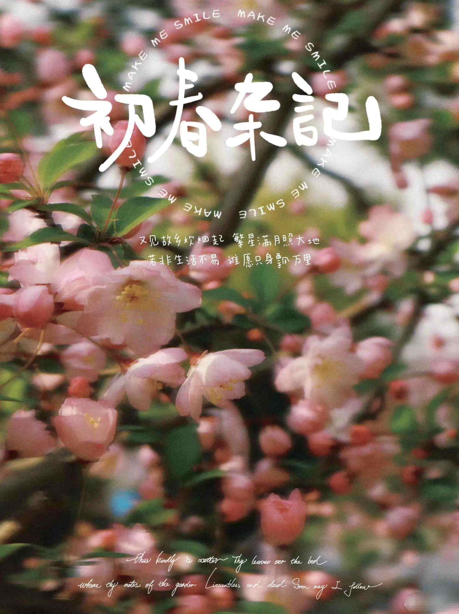
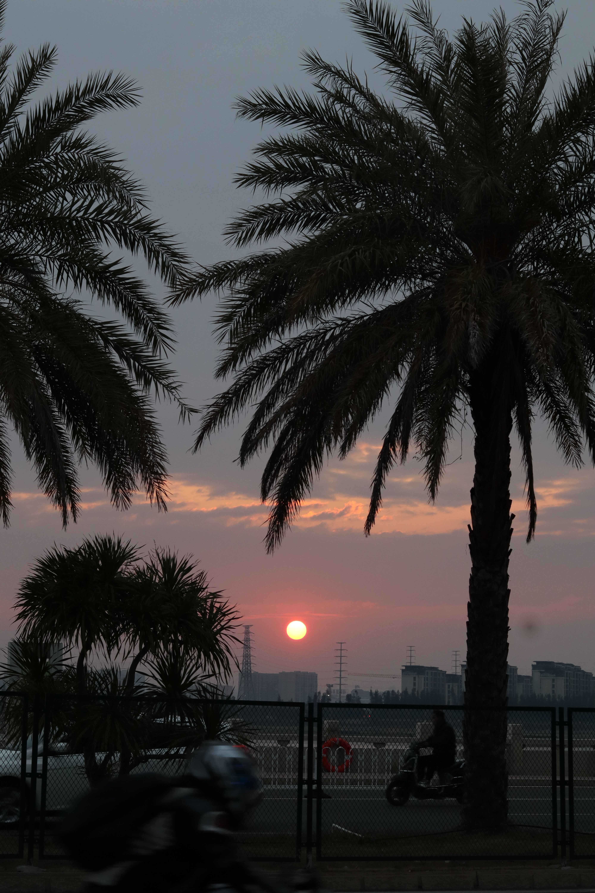
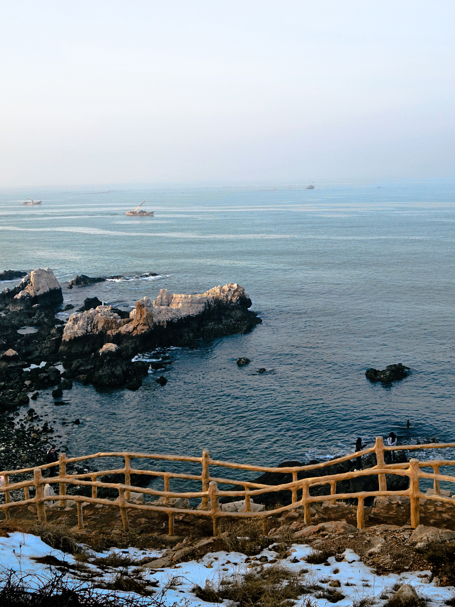
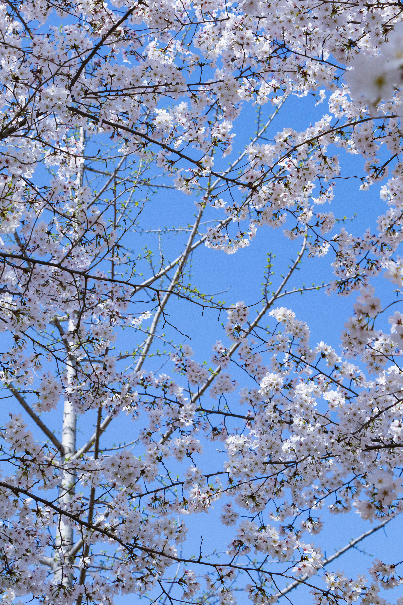

作品详情
威海天鹅湖
蓝调时刻拍摄，天鹅在波光粼粼的湖面嬉戏，冷暖对比突出自然生机与静谧感。
雪夜景
高对比度黑白风格，雪枝在暗夜里舒展，突出冬日清冷与孤寂的氛围感。

校园春日画报1
暗调背景衬托春日花枝，手写字体与光影结合，营造文艺画报感，记录校园春日。

玄武湖夫妇
三格连拍构图，捕捉湖边夫妇的互动瞬间，蓝调色调传递温情与陪伴感。
更多摄影作品

校园春日画报2

校园春日画报3

校园春日画报5

浔埔日落

威海养马岛

校园樱花